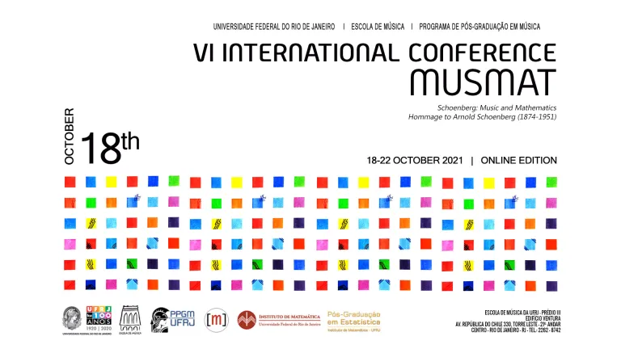

6th International MusMat Conference (MusMat 2021)
Schoenberg: Music and Mathematics («Hommage to Arnold Schoenberg»)
October 18th to 22nd (Online Edition)

Videos
DAY 5: 22 October
CONCERT 5: InterBrasilis Trio
DAY 4: 21 October
CONCERT 4: InterBrasilis Trio
DAY 3: 20 October
CONCERT 3: Works for Bassoon - Ariane Petri
DAY 2: 19 October
CONCERT 2: Works for String Quartet - Hommage to Schoenberg II - Quarteto Kalimera
DAY 1: 18 October
CONCERT 1: Works for Piano - Hommage to Schoenberg I
Proceedings
Full version
Individual papers
Desvendando o enigma derivativo: uma aplicação do Modelo De Análise Derivativa de Carlos Almada
Ana Miccolis, Ariane Petri, Luiz Stellfeld Monteiro, Max Kühn e Pedro Zisels
Análise intravetorial: breve revisão e relações gráficas em operações de substituição
André Codeço dos Santos
Rosemary Brown’s “New Scale” and the Property K
Érico Bomfim e Carlos Almada
Uma implementação eficiente em Python de um algoritmo de separação de fontes sonoras
Natanael Luciano de Matos e Hugo Tremonte de Carvalho
Análise dos materiais melódicos da canção Gute Nacht a partir do Modelo de Análise Derivativa de Carlos Almada
Luiz Stellfeld Monteiro
Game of Tones: A Simple Schoenbergian Serial Music-Making Model
José Fornari
Hauer Tropes as Clockface Diagrams: Dialogs among Forte, Carter and Ŝedivý
Julio Herrlein
Serial Keeper: um audiogame simples de rememoração de padrões atonais
Leonardo Porto Passos e José Fornari
Orí Odára: Investigação acerca dos Materiais Composicionais da Obra e a Dualidade entre Ritmos e Alturas
Luiz Stellfeld Monteiro
Uma proposta de tridimensionalidade aos pontos de distorção no contexto da teoria do domínio sonoro
André Codeço dos Santos
An Intervallic Approach to Tone Rows: SerialGen, a Twelve-Tone Row Generator
Marco Feitosa, Raphael Sousa Santos e Luan Simões Cardoso
Interactions between Derivative Teleology and Form in Dušan Bogdanović’s Study I
Ricardo de Almeida Gonçalves
Organization
ORGANIZING COMMITTEE
Carlos Almada (UFRJ) | Carlos Mathias (UFF) | Daniel Moreira de Sousa (UFRJ | CBM) | Hugo Tremonte de Carvalho (UFRJ) | Liduino Pitombeira (UFRJ) | Ariane Petri (Doutoranda - UFRJ)
SCIENTIFIC COMMITTEE
Carlos Almada (UFRJ) | Ciro Visconti (Souza Lima) | Daniel Moreira de Sousa (UFRJ) | Julio Herrlein (UFRGS) | Liduino Pitombeira (UFRJ) | Rodolfo Coelho de Souza (USP) | Walter Nery (Souza Lima) | Hugo Carvalho (UFRJ) | Carlos Mathias (UFF) | Marco Feitosa | Cecília Saraiva (UNIRIO) | Petrucio Viana (UFF) | Helder Oliveira | André Codeço | Robert Peck (LSU) | Alexandre Ferreira (CBM)
EDITORIAL BOARD OF THE PROCEEDINGS
Carlos Almada (UFRJ) | Daniel Moreira de Sousa (UFRJ | CBM) | Liduino Pitombeira (UFRJ) | Hugo Carvalho (UFRJ) | Carlos Mathias (UFF) | Cecilia Saraiva (UNIRIO)